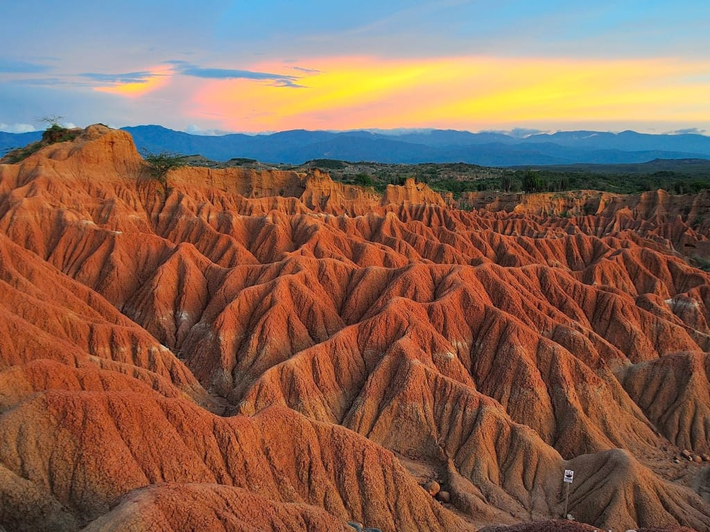
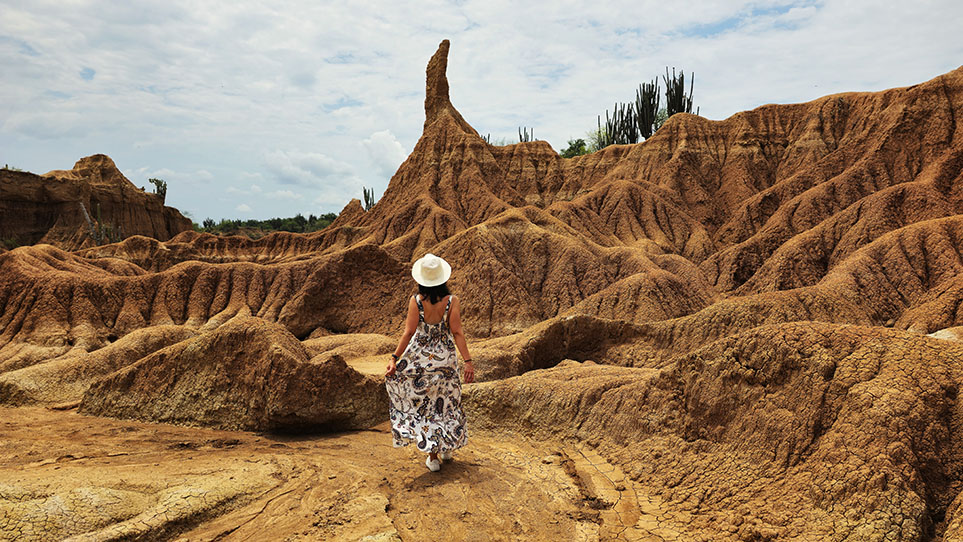

Explore the desert
Explore the trails and observe the incredible natural formations.

The Tatacoa Desert is one of the most surprising natural landscapes in Colombia. It is located in the department of Huila and is characterized by its rock formations and reddish and gray colors.
Although it is called a desert, Tatacoa is actually a tropical dry forest. Its landscapes and clear skies make it an ideal place to enjoy nature and observe the stars.

Villavieja, Huila
Rock formations
Warm and dry
Stargazing
Explore the trails and observe the incredible natural formations.
Capture the reddish and gray landscapes that characterize Tatacoa.
Enjoy the clear skies and admire the universe.
The Tatacoa Desert is a unique destination that combines landscapes, nature and astronomy. Its rock formations and night skies make this place an unforgettable experience for those visiting Colombia.